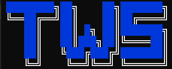
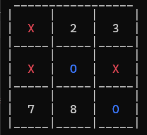

Tanulmányok
VMSZC Horváth Boldizsár Közgazdasági és Informatikai Technikum
2020 - 2025
Szoftverfejlesztő és tesztelő
Python
C# fejlesztés
Frontend fejlesztés
Adatbázis-kezelés
.Net Backend fejlesztés
Széchenyi István Egyetem
University of Győr
2025 - Jelenleg
MérnökInformatika Bsc
Mesterséges Intelligencia
Projektmenedzsment
C++ programozás
OO programozás
Gépi látás
Projektek


Tic-Tac-Toe — Wordle — Szókereső
2022
Első iskolai projektjeim egyike. Egy egyszerű szoftver, amely három különböző játéktípust tartalmaz.
C#
Console alkalmazás
Játék